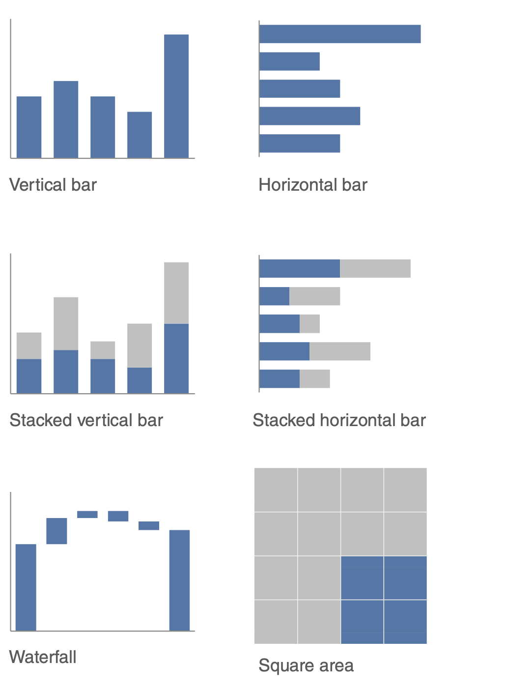
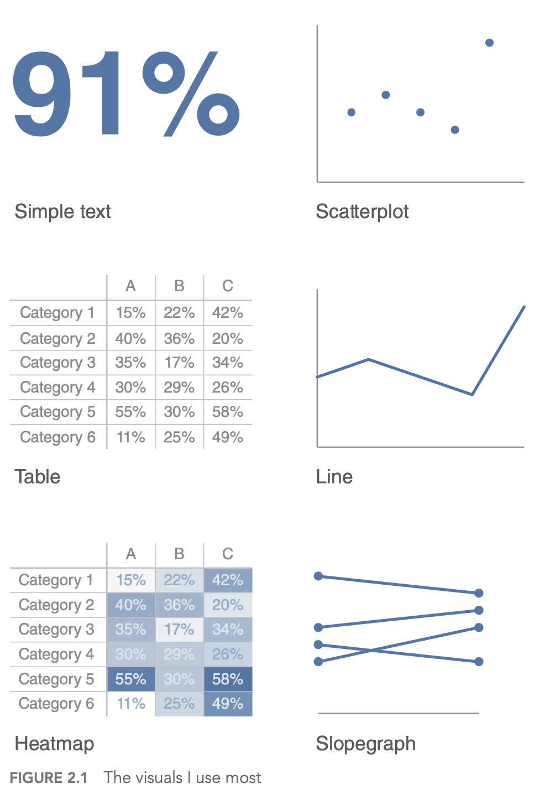
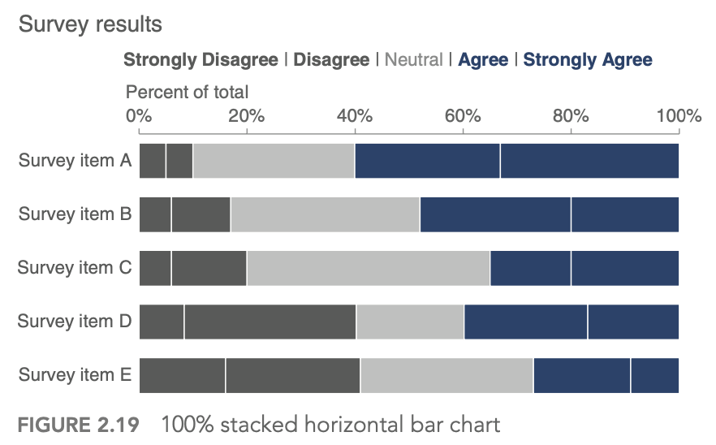
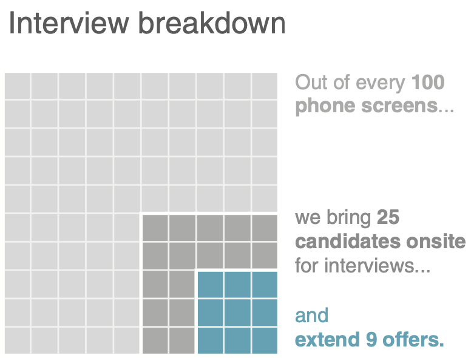
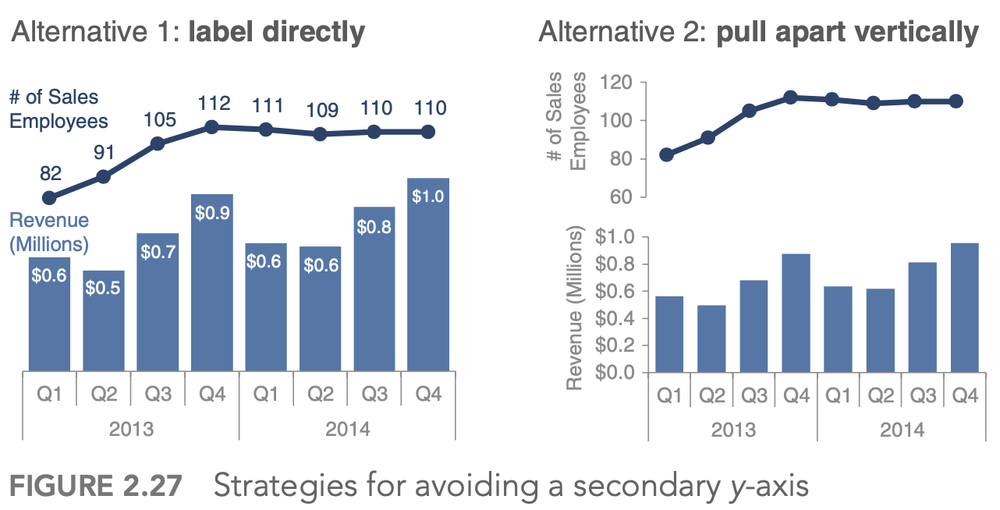
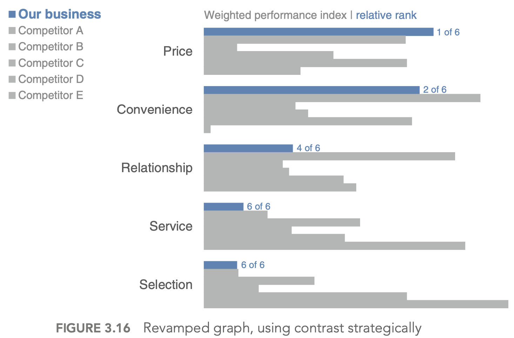
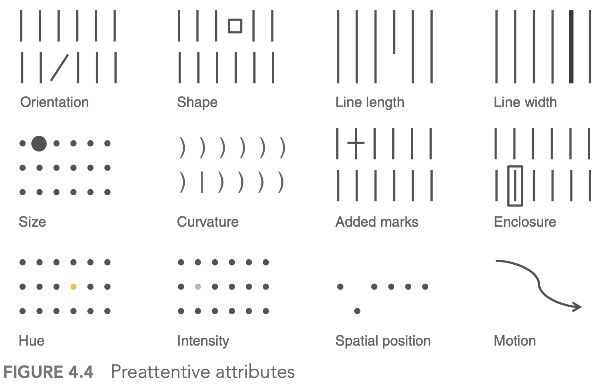
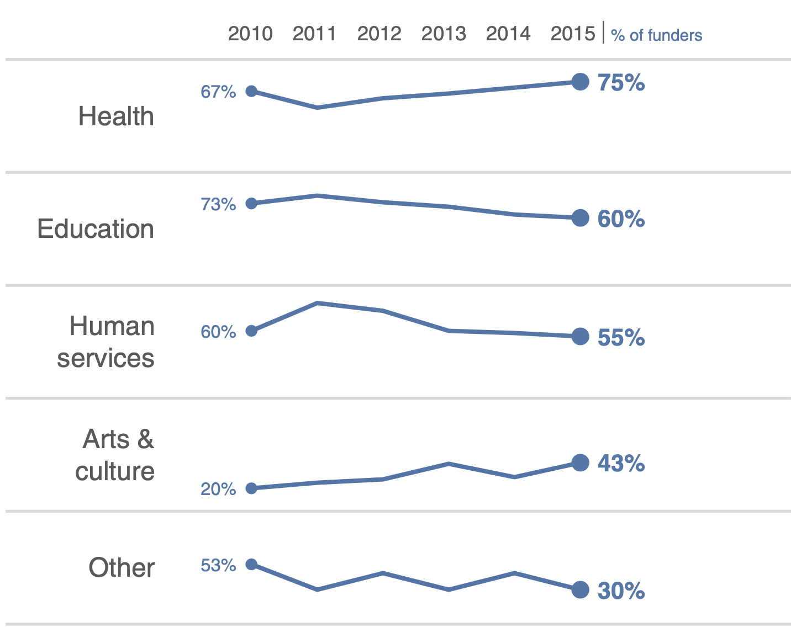
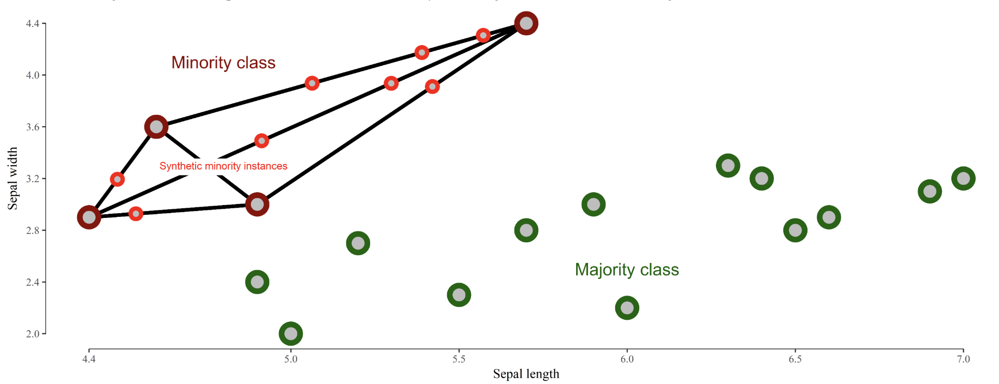

data analysis
view markdownpqrs
- Goal: inference - conclusion or opinion formed from evidence
- PQRS
- P - population
- Q - question - 2 types
- hypothesis driven - does a new drug work
- discovery driven - find a drug that works
- R - representative data colleciton
- simple random sampling = SRS
- w/ replacement: $var(\bar{X}) = \sigma^2 / n$
- w/out replacement: $var(\bar{X}) = (1 - \frac{n}{N}) \sigma^2 / n$
- simple random sampling = SRS
- S - scrutinizing answers
visualization
First 5 parts here are based on the book storytelling with data by cole nussbaumer knaflic
- difference between showing data + storytelling with data
understand the context (1)
- who is your audience? what do you need them to know/do?
- exploratory vs explanatory analysis
- slides (need little details) vs email (needs lots of detail) - usually need to make both in slideument
- should know how much nonsupporting data to show
- distill things down into a 3-minute story or a 1-sentence Big Idea
- easiest to start things on paper/post-it notes
choose an effective visual (2)
 |
 |
|---|---|
 |
 |
 |
 |
 |
 |
- generally avoid pie/donut charts, 3D charts, 2nd y-axes
- tables
- best for when people will actually read off numbers
- minimalist is best
- bar charts should basically always start at 0
- horizontal charts typically easy to read
- on axes, retain things like dollar signs, percent, etc.
eliminate clutter (3)
- gestalt principles of vision
- proximity - close things are grouped
- similarity - similar things are grouped
- connection - connected things are grouped
- enclosure
- closure
- continuity
- generally good to have titles and such at top-left!
- diagonal lines / text should be avoided
- center-aligned text should be avoided
- label lines directly
focus attention (4)
- visual hierarchy - outlines what is important
tell a story / think like a designer (5)
- affordances - aspects that make it obvious how something will be used (e.g. a button affords pushing)
- “You know you’ve achieved perfection, not when you have nothing more to add, but when you have nothing to take away” (Saint‐Exupery, 1943)
- stories have different parts, which include conflict + tension
- beginning - introduce a problem / promise
- middle - what could be
- end - call to action
- horizontal logic - people can just read title slides and get out what they need
- can either convince ppl through conventional rhetoric or through a story
visual summaries
- numerical summaries
- mean vs. median
- sd vs. iq range
- visual summaries
- histogram
- kernel density plot - Gaussian kernels
- with bandwidth h $K_h(t) = 1/h K(t/h)$
- plots
- box plot / pie-chart
- scatter plot / q-q plot
- q-q plot = probability plot - easily check normality
- plot percentiles of a data set against percentiles of a theoretical distr.
- should be straight line if they match
- transformations = feature engineering
- log/sqrt make long-tail data more centered and more normal
- delta-method - sets comparable bw (wrt variance) after log or sqrt transform: $Var(g(X)) \approx [g’(\mu_X)]^2 Var(X)$ where $\mu_X = E(X)$
- if assumptions don’t work, sometimes we can transform data so they work
- transform x - if residuals generally normal and have constant variance
- corrects nonlinearity - transform y - if relationship generally linear, but non-constant error variance
- stabilizes variance - if both problems, try y first - Box-Cox: Y’ = $Y^l : if : l \neq 0$, else log(Y)
- least squares
- inversion of pxp matrix ~O(p^3)
- regression effect - things tend to the mean (ex. bball children are shorter)
- in high dims, l2 worked best
- kernel smoothing + lowess
- can find optimal bandwidth
- nadaraya-watson kernel smoother - locally weighted scatter plot smoothing
- \(g_h(x) = \frac{\sum K_h(x_i - x) y_i}{\sum K_h (x_i - x)}\) where h is bandwidth - loess - multiple predictors / lowess - only 1 predictor
- also called local polynomial smoother - locally weighted polynomial
- take a window (span) around a point and fit weighted least squares line to that point
- replace the point with the prediction of the windowed line
- can use local polynomial fits rather than local linear fits
-
silhouette plots - good clusters members are close to each other and far from other clustersf
- popular graphic method for K selection
- measure of separation between clusters $s(i) = \frac{b(i) - a(i)}{max(a(i), b(i))}$
- a(i) - ave dissimilarity of data point i with other points within same cluster
- b(i) - lowest average dissimilarity of point i to any other cluster
- good values of k maximize the average silhouette score
- lack-of-fit test - based on repeated Y values at same X values
imbalanced data
- randomly oversample minority class
- randomly undersample majority class
- weighting classes in the loss function - more efficient, but requires modifying model code
- generate synthetic minority class samples
- smote (chawla et al. 2002) - interpolate betwen points and their nearest neighbors (for minority class) - some heuristics for picking which points to interpolate

- adasyn (he et al. 2008) - smote, generate more synthetic data for minority examples which are harder to learn (number of samples is proportional to number of nearby samples in a different class)
- smrt - generate with vae
- smote (chawla et al. 2002) - interpolate betwen points and their nearest neighbors (for minority class) - some heuristics for picking which points to interpolate
- selectively removing majority class samples
- tomek links (tomek 1976) - selectively remove majority examples until al lminimally distanced nearest-neighbor pairs are of the same class
- near-miss (zhang & mani 2003) - select samples from the majority class which are close to the minority class. Example: select samples from the majority class for which the average distance of the N closest samples of a minority class is smallest
- edited nearest neighbors (wilson 1972) - “edit” the dataset by removing samples that don’t agree “enough” with their neighborhood
- feature selection and extraction
- minority class samples can be discarded as noise - removing irrelevant features can reduce this risk
- feature selection - select a subset of features and classify in this space
- feature extraction - extract new features and classify in this space
- ideas
- use majority class to find different low dimensions to investigate
- in this dim, do density estimation
- residuals - iteratively reweight these (like in boosting) to improve performance
- incorporate sampling / class-weighting into ensemble method (e.g. treat different trees differently)
- ex. undersampling + ensemble learning (e.g. IFME, Becca’s work)
- algorithmic classifier modifications
- misc papers
- enrichment (jegierski & saganowski 2019) - add samples from an external dataset
- ref
- imblanced-learn package with several methods for dealing with imbalanced data
- good blog post
- Learning from class-imbalanced data: Review of methods and applications (Haixiang et al. 2017)
- sample majority class w/ density (to get best samples)
- log-spline - doesn’t scale
whitening
- get decorrelated features $Z$ from inputs $X$
- $W=$ whitening matrix , selected based on problem goals:
- PCA: Maximal compression of $\mathbf{X}$ in $\mathbf{Z}$
- ZCA: Maximal similarity between $\mathbf{X}$ and $\mathbf{Z}$
- Cholesky: Inducing structure: $\operatorname{Cov}(X, Z)$ is lower-triangular with positive diagonal elements
- $W$ is constrained as to enforce $\Sigma_{Z}=I$
missing-data imputation
- Missing value imputation: a review and analysis of the literature (lin & tsai 2019)
- Purposeful Variable Selection and Stratification to Impute Missing FAST Data in Trauma Research (fuchs et al. 2014)
- Causal Inference: A Missing Data Perspective (ding & li, 2018)
- different missingness mechanisms (little & rubin, 1987)
- MCAR - missing completely at random - no relationship between the missingness of the data and any values, observed or missing
- MAR - missing at random - propensity of missing values depends on observed data, but not the missing data
- can easily test for this vs MCAR
- MNAR - missing not at random - propensity of missing values depends both on observed and unobserved data
- connections to causal: MCAR is much like randomization, MAR like ignorability (although slightly more general), and MNAR like unmeasured unconfounding
- imputation problem: propensity of missing values depends on the unobserved values themselves (not ignorable)
- simplest approach: drop rows with missing vals
- mean/median imputation
- probabilistic approach
- EM approach, MCMC, GMM, sampling
- matrix completion: low-rank, PCA, SVD
- nearest-neighbor / matching: hot-deck
- (weighted) prediction approaches
- linear regr, LDA, naive bayes, regr. trees, LDA
- can do weighting using something similar to inverse propensities, although less common to check things like covariate balance
- multiple imputation: impute multiple times to get better estimates
- MICE (passes / imputes data multiple times sequentially)
- can perform sensitivity analysis to evaluate the assumption that things are not MNAR
- two standard models for nonignorable missing data are the selection models and the pattern-mixture models (Little and Rubin, 2002, Chapter 15)
- performance evaluation
- acc at finding missing vals
- acc in downstream task
feature engineering
- often good to discretize/binarize features
- e.g. from genomics
principles
breiman
- conversation
- moved sf -> la -> caltech (physics) -> columbia (math) -> berkeley (math)
- info theory + gambling
- CART, ace, and prob book, bagging
- ucla prof., then consultant, then founded stat computing at berkeley
- lots of cool outside activities
- ex. selling ice in mexico
- 2 cultures paper
- generative - data are generated by a given stochastic model
- stat does this too much and needs to move to 2
- ex. assume y = f(x, noise, parameters)
- validation: goodness-of-fit and residuals
- predictive - use algorithmic model and data mechanism unknown
- assume nothing about x and y
- ex. generate P(x, y) with neural net
- validation: prediction accuracy
- axioms
- Occam
- Rashomon - lots of different good models, which explains best? - ex. rf is not robust at all
- Bellman - curse of dimensionality
- might actually want to increase dimensionality (ex. svms embedded in higher dimension)
- industry was problem-solving, academia had too much culture
- generative - data are generated by a given stochastic model
box + tukey
- questions
- what points are relevant and irrelevant today in both papers?
- relevant
- box
- thoughts on scientific method
- solns should be simple
- necessity for developing experimental design
- flaws (cookbookery, mathematistry)
- tukey
- separating data analysis and stats
- all models have flaws
- no best models
- lots of goold old techniques (e.g. LSR) - irrelevant
- some of the data techniques (I think)
- tukey multiple-response data has been better attacked (graphical models)
- how do you think the personal traits of Tukey and Box relate to the scientific opinions expressed in their papers?
- probably both pretty critical of the science at the time
- box - great respect for Fisher
- both very curious in different fields of science
- what is the most valuable msg that you get from each paper?
- box - data analysis is a science
- tukey - models must be useful
- no best models
- find data that is useful
- no best models
- what points are relevant and irrelevant today in both papers?
- box_79 “science and statistics”
- scientific method - iteration between theory and practice
- learning - discrepancy between theory and practice
- solns should be simple
- fisher - founder of statistics (early 1900s)
- couples math with applications
- data analysis - subiteration between tentative model and tentative analysis
- develops experimental design
- flaws
- cookbookery - forcing all problems into 1 or 2 routine techniques
- mathematistry - development of theory for theory’s sake
- scientific method - iteration between theory and practice
- tukey_62 “the future of data analysis”
- general considerations
- data analysis - different from statistics, is a science
- lots of techniques are very old (LS - Gauss, 1803)
- all models have flaws
- no best models
- must teach multiple data analysis methods
- spotty data - lots of irregularly non-constant variability
- could just trim highest and lowest values
- winzorizing - replace suspect values with closest values that aren’t
- must decide when to use new techniques, even when not fully understood
- want some automation
- FUNOP - fulll normal plot
- can be visualized in table
- could just trim highest and lowest values
-
spotty data in more complex situations
- FUNOR-FUNOM
- multiple-response data
- understudied except for factor analysis
- multiple-response procedures have been modeled upon how early single-response procedures were supposed to have been used, rather than upon how they were in fact used
- factor analysis
- reduce dimensionality with new coordinates
- rotate to find meaningful coordinates
- can use multiple regression factors as one factor if they are very correlated
- regression techniques always offer hopes of learning more from less data than do variance-component techniques
-
flexibility of attack
- ex. what unit to measure in
- general considerations
models
- normative - fully interpretable + modelled
- idealized
- probablistic
- ~mechanistic - somewhere in between
- descriptive - based on reality
- empirical
exaggerated claims
- video by Rob Kass
- concepts are ambiguous and have many mathematical instantiations
- e.g. “central tendency” can be mean or median
- e.g. “information” can be mutual info (reduction in entropy) or squared correlation (reduction in variance)
- e.g. measuring socioeconomic status and controlling for it
- regression “when controlling for another variable” makes causal assumptions
- must make sure that everything that could confound is controlled for
- Idan Segev: “modeling is the lie that reveals the truth”
- picasso: “art is the lie that reveals the truth”
- box: “all models are wrong but some are useful” - statistical pragmatism
- moves from true to useful - less emphasis on truth
- “truth” is contingent on the purposes to which it will be put
- the scientific method aims to provide explanatory models (theories) by collecting and analyzing data, according to protocols, so that
- the data provide info about models
- replication is possible
- the models become increasingly accurate
- scientific knowledge is always uncertain - depends on scientific method